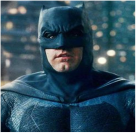
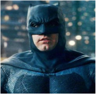
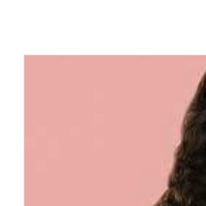

Batman
Bruce Wayne é o único personagem a se identificar como Batman e aparece em Batman, Detective Comics, Batman e Robin e Batman: O Cavaleiro das Trevas. Dick Grayson retorna ao manto de Asa Noturna.


Alerquina
Arlequina é uma personagem fictícia criada pelos americanos Paul Dini e Bruce Timm para a DC Comics. Quinn fez sua estréia no vigésimo segundo episódio de Batman: The Animated Series, "The Joker's Favor", em setembro de 1992 e se tornou uma vilã recorrente na série.

Mulher - Maravilha
É uma super-heroína criada por William Moulton Marston para a editora DC Comics. Ela é uma princesa guerreira das Amazonas, uma cidade fictícia baseada nas Amazonas da mitologia grega. Em sua terra natal, é conhecida como Princesa Diana de Themyscira, mas fora disso ela usa a identidade secreta de Diana Prince.


Superman
É um super-herói que apareceu pela primeira vez nos quadrinhos americanos publicados pela DC Comics. O personagem foi criado pelo escritor americano Jerry Siegel e pelo artista canadense Joe Shuster em 1933, quando ambos moravam em Cleveland, Ohio.